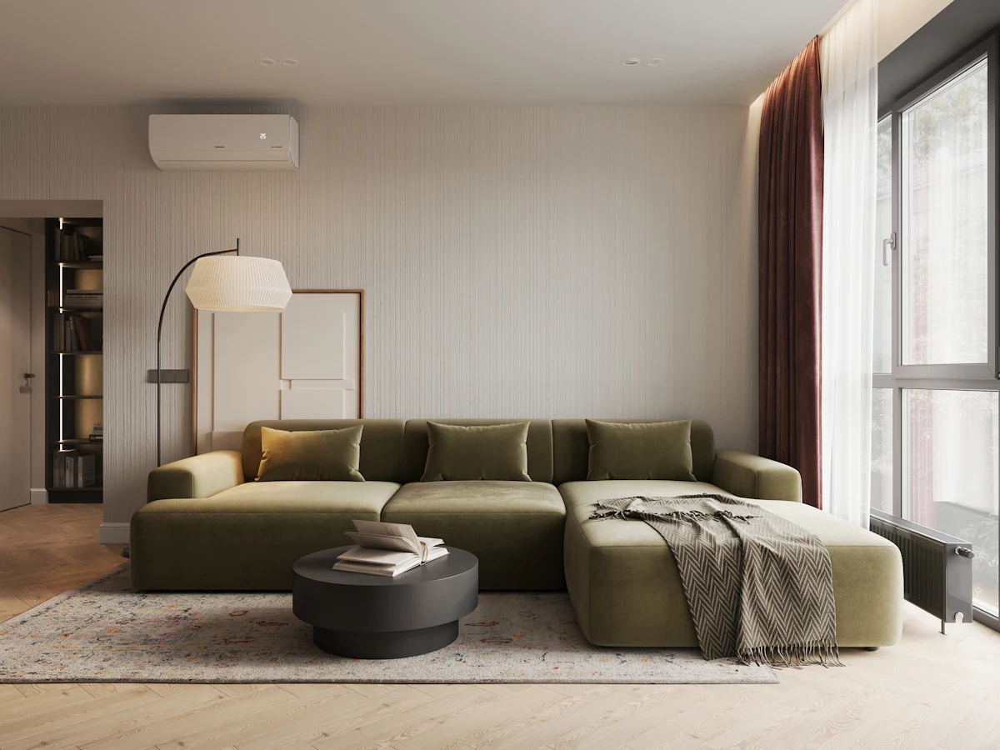
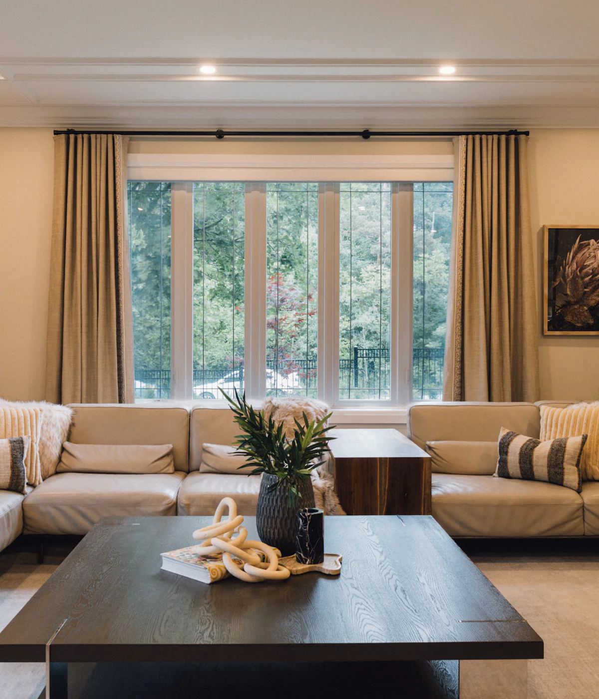
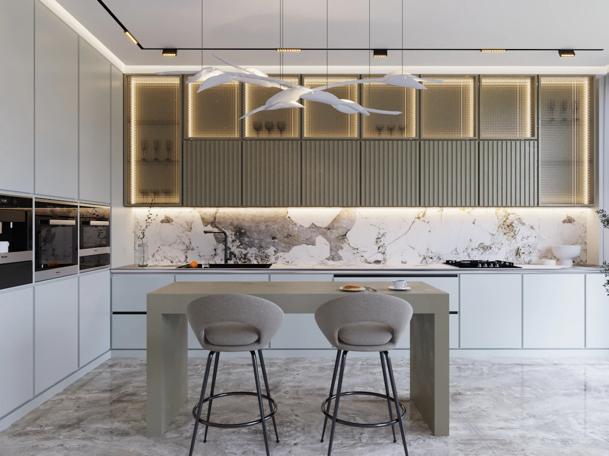
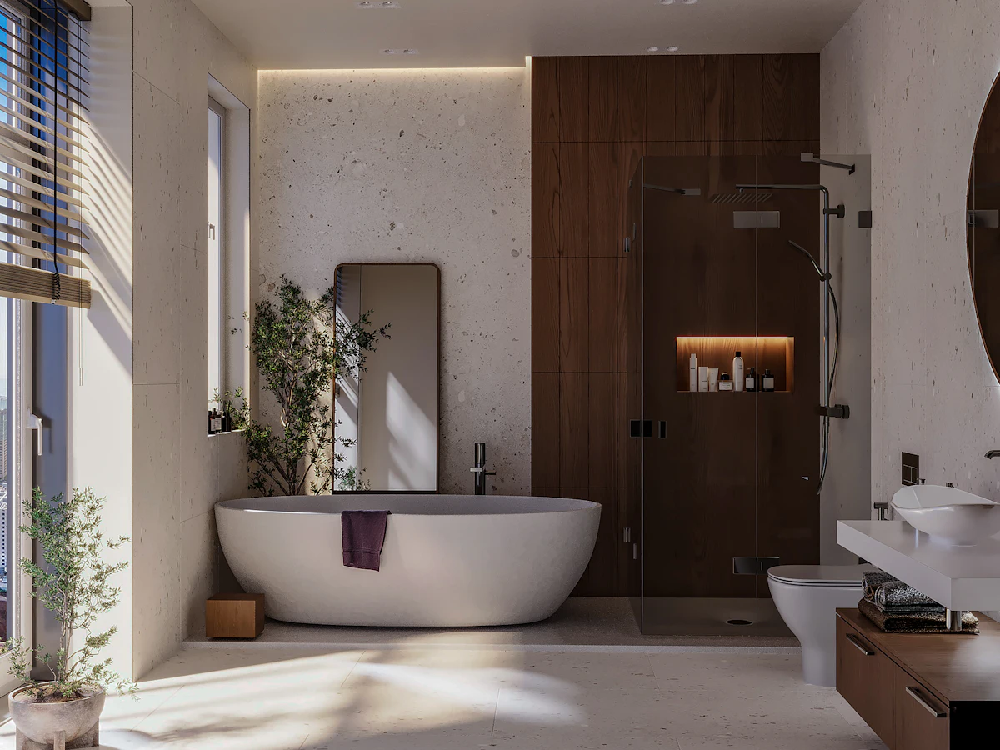
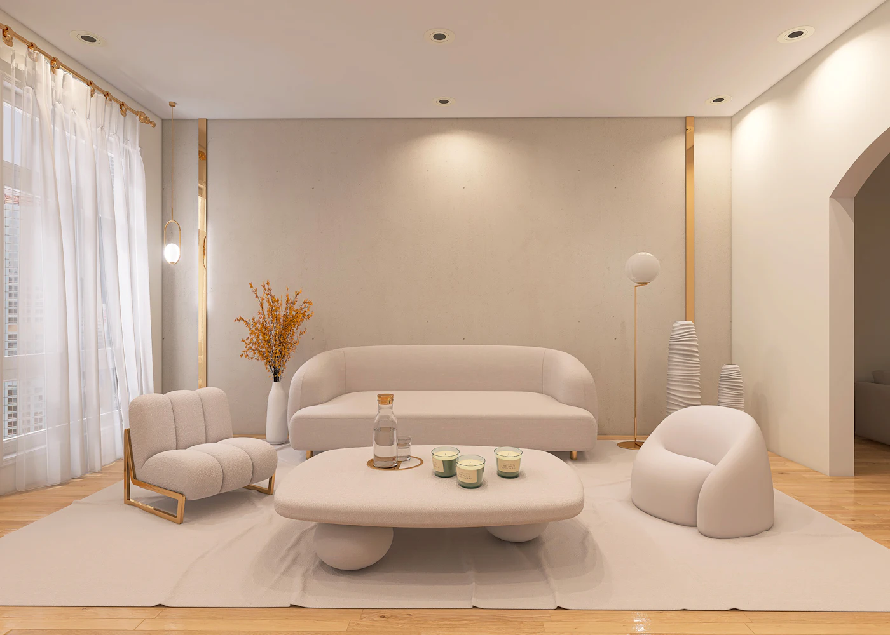
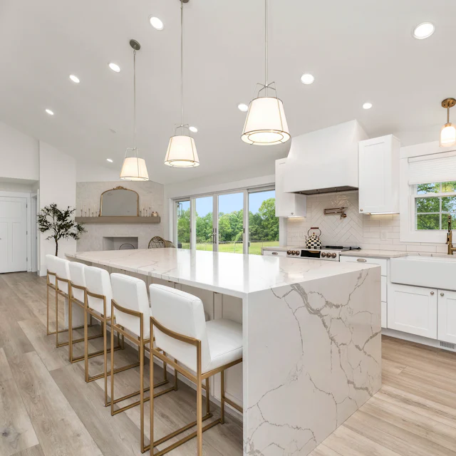
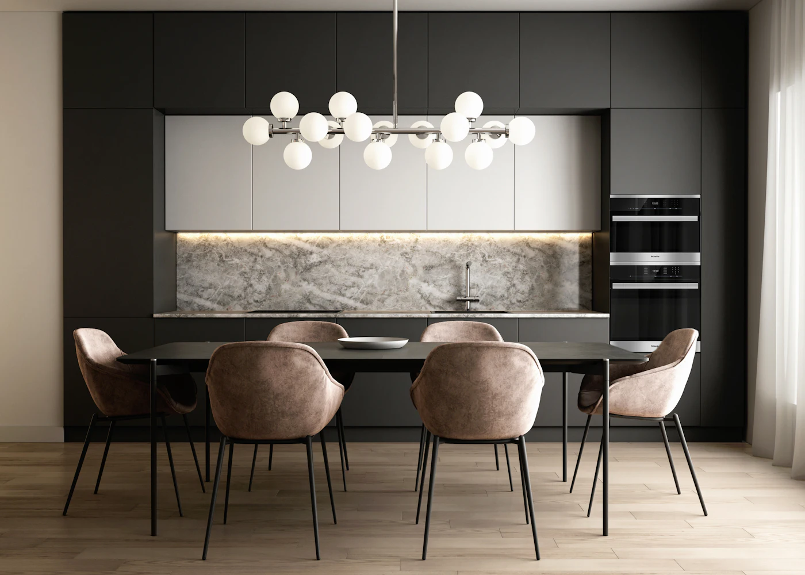
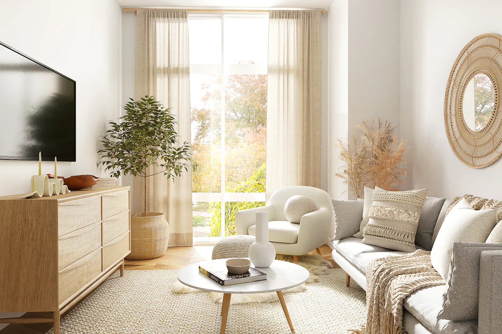
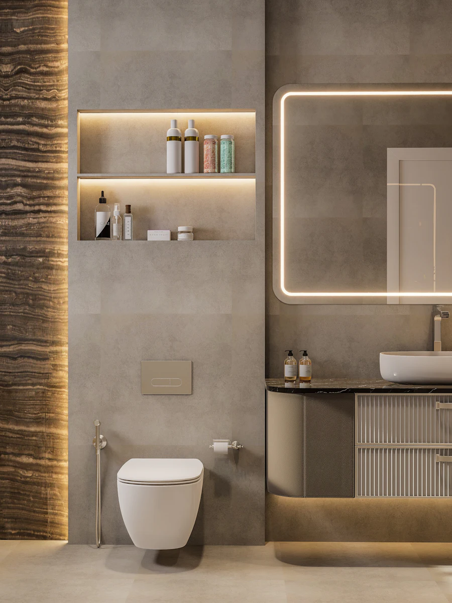
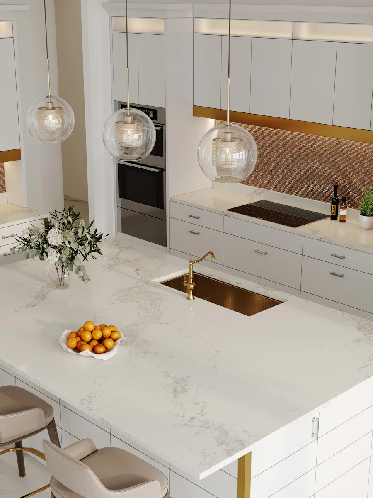

ViviendaReformas integrales de vivienda
Distribución, instalaciones y acabados pensados como un único proyecto.
Ver reformas integrales
Inés Barrios Reformas e Interiorismo une la obra y el diseño de los espacios en un mismo proyecto, en Villaviciosa de Odón (Madrid).
Primera visita sin compromiso Villaviciosa de Odón · Madrid
Desde una estancia concreta hasta la vivienda entera. Cada encargo empieza por entender el espacio y a quien lo habita.

ViviendaDistribución, instalaciones y acabados pensados como un único proyecto.
Ver reformas integrales
CocinasUn lugar para estar además de cocinar: orden, luz y materiales que aguantan el día a día.
Ver cocinas
Baños
InteriorismoDistribución, color, iluminación y mobiliario para que la casa tenga sentido en conjunto.
Ver interiorismoAntes de hablar de obra vemos el espacio contigo y escuchamos qué necesitas. Después decides tú si seguimos adelante.
Por teléfono o por WhatsApp: qué quieres cambiar y cómo usas la casa.
Vemos el espacio contigo y tomamos nota de lo que necesitas.

Te presentamos la idea y un presupuesto detallado para que decidas con calma.
Coordinamos los trabajos y te contamos cómo avanzan hasta dejarlo terminado.
Una muestra del tipo de espacios que nos gusta trabajar.




Imágenes ilustrativas; no corresponden a obras de la empresa.
Cuéntanos qué estancia quieres cambiar y en qué punto estás. Sin formularios: directamente por WhatsApp o por teléfono.